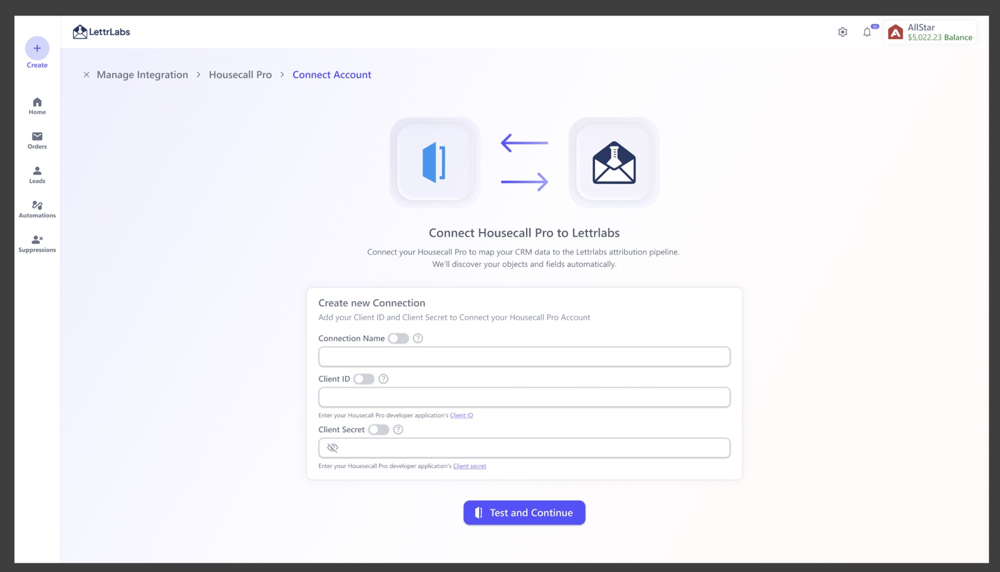
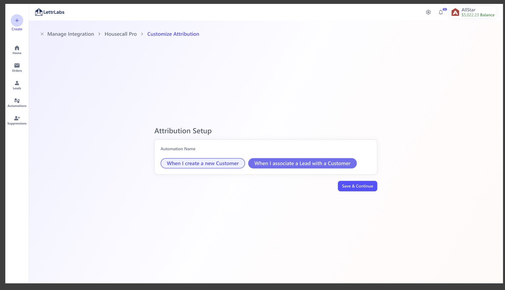

Building a reusable integration flow for any API connection.
Connecting one app is easy. Designing a repeatable system that can support CRMs, ecommerce tools, webhooks, custom APIs, attribution, automation triggers, and future integrations without redesigning everything each time? That is where the fun starts.
North Star
Design one reusable integration framework where connecting third-party apps feels familiar, fast, and trustworthy even when the underlying APIs, fields, and business logic are different.

Every new integration felt like starting over.
Lettrlabs’ vision is to become a one-stop shop for direct mail. But customers do not keep their data in one place. Their leads, customers, lifecycle events, purchases, jobs, and CRM activity live across different platforms.
Before this project, each app could become its own experience. Different fields, auth requirements, setup steps, and implementation patterns made integrations harder to design, build, remember, and maintain.
Why integrations mattered
The goal was not just “connect an app.” The goal was to make customer data useful across direct mail workflows.
Use existing customer data
Customers could bring their own CRM or app data instead of relying only on purchased data.
Trigger automations
Customer events and lifecycle data could trigger direct mail automatically.
Power attribution and analytics
Connected data could support attribution, reporting, data merge, and audience expansion.
From one-off integrations to a reusable platform pattern.
The goal was to make the next integration feel familiar: same structure, same states, same mental model, with only the app-specific inputs changing.
Select integration
Use the same shell, logo slot, app name, and description pattern.
Connect account
Support OAuth when available, or a simple credential form when needed.
Test and validate
Show loading, progress, success, failure, syncing, and recovery states.
Customize attribution
Let users finish the setup only when extra business logic is needed.
Manage accounts
List multiple accounts, statuses, sync details, remove actions, and next steps.
Before vs. after
The design goal was to make the next integration feel like configuration, not reinvention.
Supported integration ecosystem
The framework was designed to support different sources of customer data, not just one CRM.
Connection lifecycle
This lifecycle made the experience predictable across different integration types.
Disconnected → Connect
Users start from a consistent entry point whether the integration uses OAuth, API keys, or simple credential fields.
Testing → Syncing
Loading and progress states explain that the system is validating credentials and reading the needed data.
Connected → Configure
Success is followed by clear next actions, including attribution setup and automation creation.
Failed → Recover
Error and failed states help users understand what happened and how to continue.
Active → Manage
Connected accounts appear in a reusable management list with status, sync details, remove, and setup actions.
Add another account
The same integration can support multiple accounts, which is important for real business workflows.
Key design decisions
The product value came from deciding what users should not have to care about.
Early concepts exposed too much data and too many fields. The final direction focused on the few required inputs needed to connect, test, and move forward.

Reduce setup to the essentials
The final direction focused on the few required inputs needed to connect, test, and move forward.
Connecting the app and customizing attribution are related, but they are not the same job. Separating them kept the first step simple while still supporting deeper setup when business logic required it.

Separate connection from configuration
Separating the first connection step from attribution setup kept the flow simple.
I designed the flow so the logo, app name, fields, and custom attributes could change without forcing a full redesign. This made future integrations feel more like swapping configuration into a stable product pattern.
Make the UI reusable by default
Future integrations feel more like swapping configuration into a stable product pattern.
Success and sync states were not limited to one screen. The account list and in-app notifications helped users understand when their connection was active, syncing, failed, or ready for the next step.

Show status beyond the detail page
Success and sync states were visible in the account list and follow-up notifications.
Technical complexity does not always need a complex interface.
My first assumption was that connecting integrations would require many fields and a lot of visible configuration. But after working through the flow with the team, the better answer was the simpler one: ask for only what is essential, validate it clearly, and let the backend do the heavy lifting.
Version 2 would refine syncing status, add stronger search for integrations, expand OAuth support, and use AI to help preselect fields for automation, data merge, and attribution setup.
“This project taught me that good platform design is not about showing all the data. It is about knowing which data matters, hiding the rest, and making the next integration easier than the last.”